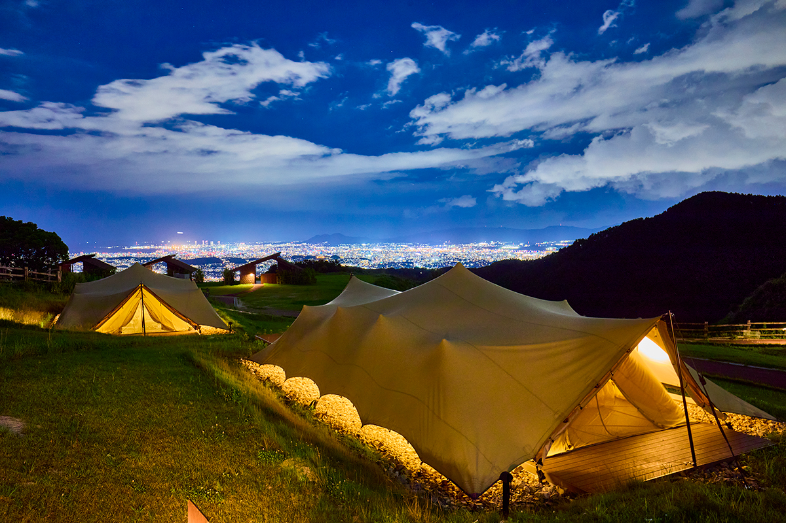
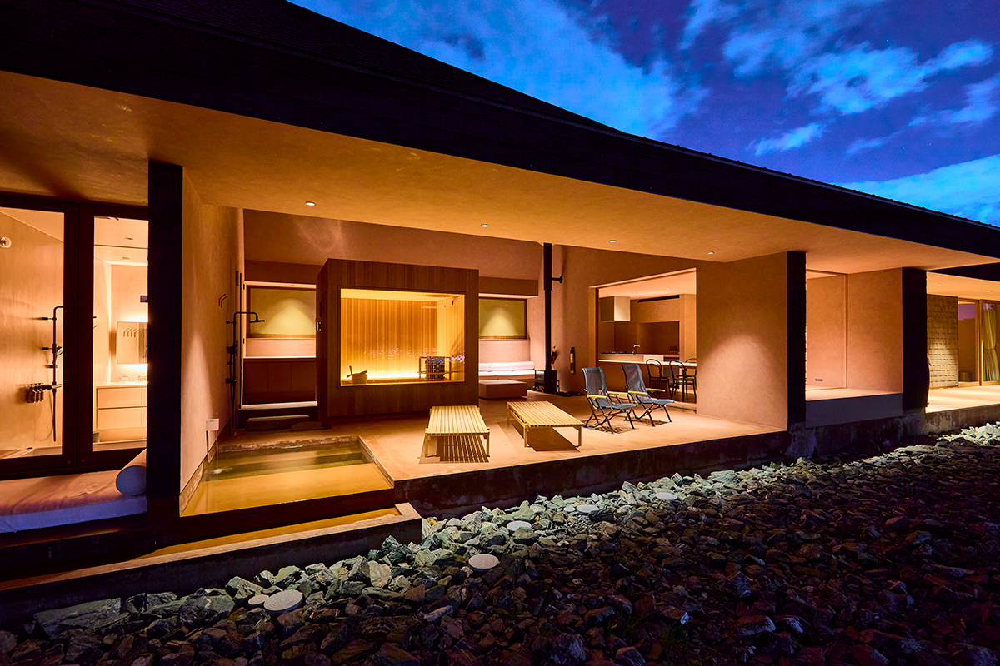
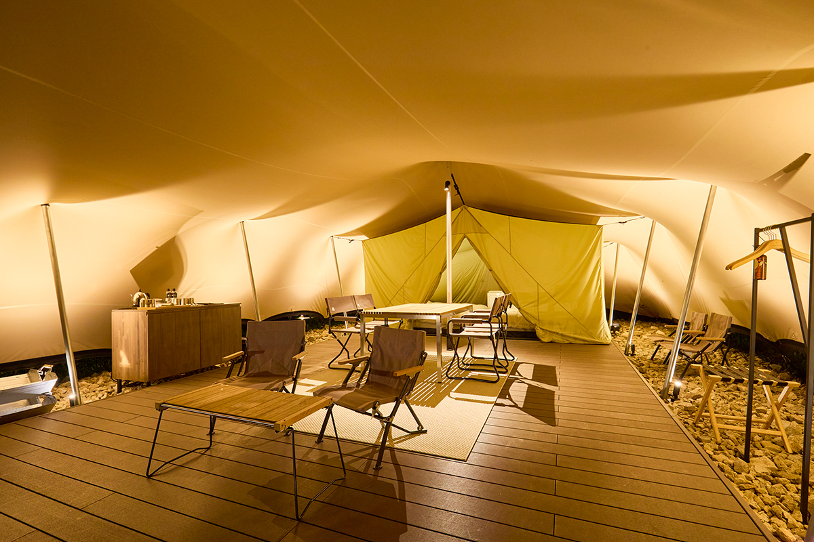
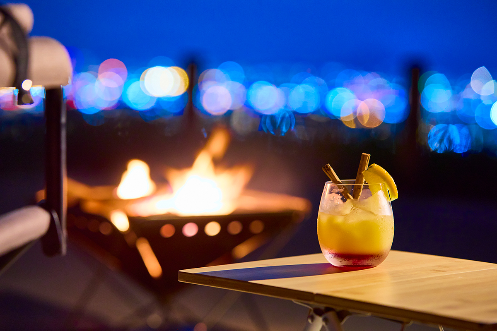
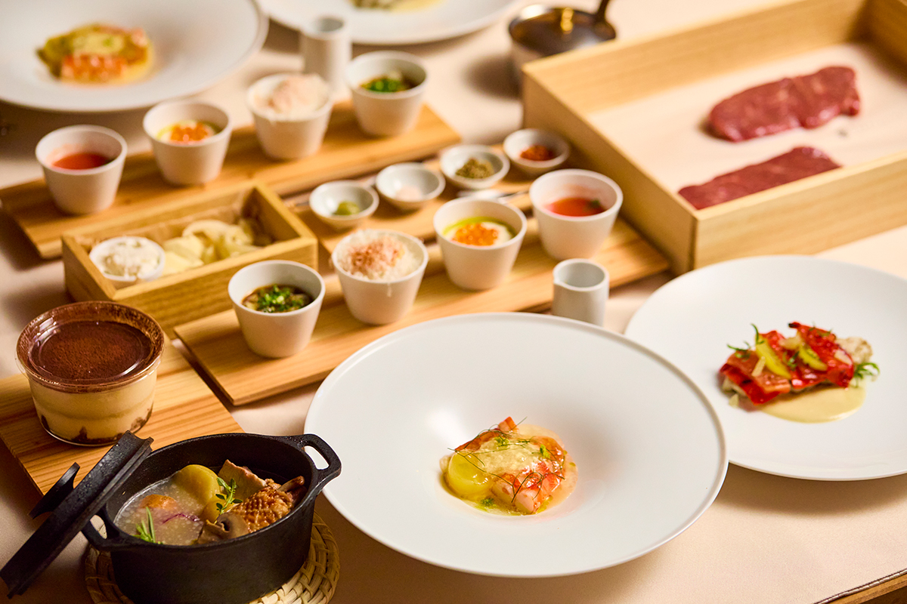
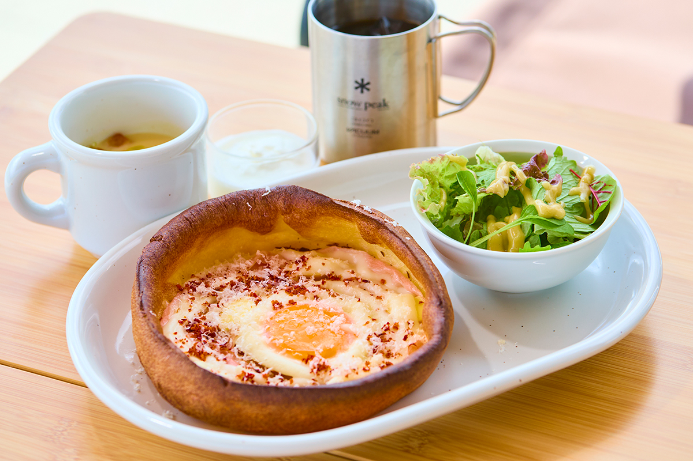

Префектура Фукуока · Фукуока, гора Абура · отель
Snow Peak YAKEI SUITE на горе Абура: ночь в палатке над огнями Фукуоки

На склоне горы Абура, в получасе езды от вокзала Хакаты, весной 2024 года открылся отель, где ночуют в палатках и домиках прямо над городом. Днём отсюда видно море, а ночью внизу загораются огни Фукуоки.
Отель
Палатка с видом на огни города
Гора Абура поднимается на юге Фукуоки, и с её склонов город виден как на ладони. На середине подъёма работает загородный комплекс ABURAYAMA FUKUOKA с площадками для отдыха на природе, а 18 апреля 2024 года в нём открылся отель Snow Peak YAKEI SUITE ABURAYAMA FUKUOKA. Snow Peak в названии это японский производитель снаряжения для кемпинга. До вокзала Хакаты около 30 минут на машине.
Главное здесь вид. С площадки открываются море и весь город, а после заката огни Фукуоки рассыпаются внизу, словно драгоценные камни. Само слово «якэй» в названии по-японски значит «ночной пейзаж».

Всего в отеле 14 мест для ночлега: одна вилла, три коттеджа и десять палаток. Во всех устроена «гостиная под открытым небом», которая плавно переходит в окружающую природу. Палатки особые: модель LAND CAVE компания Snow Peak сделала специально для этого места, и в 2024 году переночевать в ней в Японии можно было только здесь.

Вечером гости собираются у костра и смотрят на город. У огня можно заказать авторские коктейли, джин из города Асакура в той же префектуре и сакэ с разных концов Кюсю.

Кухня
Французский ужин и походная посуда
За кухню отвечает шеф Хироки Ёситакэ, чей ресторан Restaurant Sola в Париже получил звезду Мишлен. Для отеля он придумал курс, в котором французская кухня встречается с походной. Ужин подают прямо в номер, всего 11 блюд.

Завтракают под открытым небом. Главное на столе это паскад, фирменное блюдо шефа: пышный французский блин. К нему подают йогурт из молока с фермы на горе Абура, салат и суп.

Маршрут
По пути с туристическим поездом
Ночь на горе Абура удобно совместить с поездкой на туристическом поезде «Канпати Итироку». Он идёт по линии Юфу-Когэн через горы Кюсю в соседнюю префектуру Оита, так что отель хорошо подходит для первой или последней ночи такого путешествия.
Snow Peak YAKEI SUITE ABURAYAMA FUKUOKA
- Адрес
- префектура Фукуока, Фукуока, район Минами, Касивара, 710-2, на территории ABURAYAMA FUKUOKA
- Телефон
- +81 92-235-1827
- Номера
- 14 (1 вилла, 3 коттеджа, 10 палаток)
- Цены / Вход
- палатка от 27 900 иен, коттедж от 50 100 иен, вилла от 75 700 иен за ночь с ужином и завтраком, с налогом и сервисным сбором; в вилле и коттеджах всё включено (2024 год)
- Заезд / выезд
- 15:00 / 11:00
- Как добраться
- на машине около 15 минут от съезда Цуцуми городской скоростной дороги Фукуоки; от вокзала JR Хаката около 30 минут на такси
Фото: Косаку Китадзима.